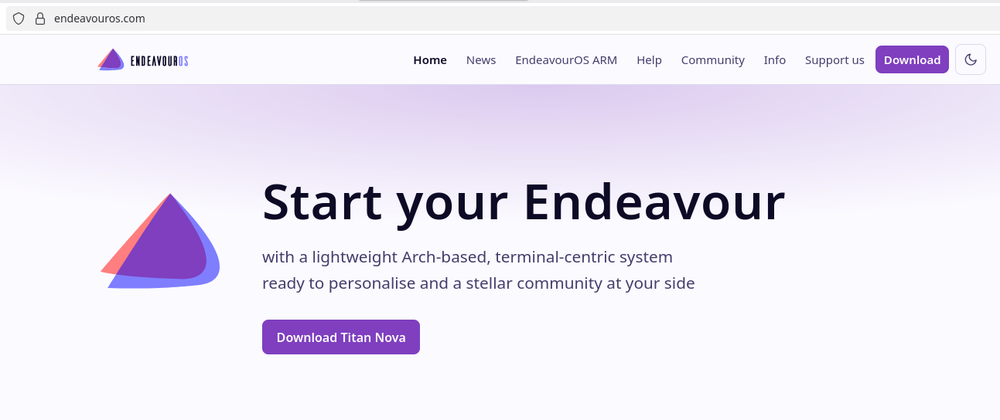
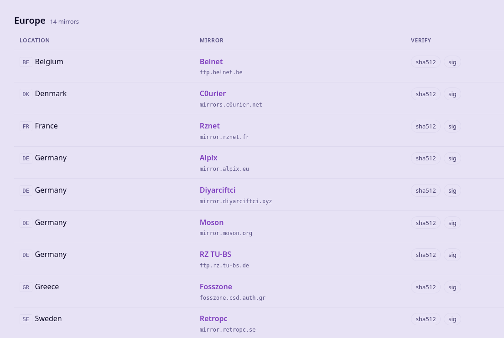
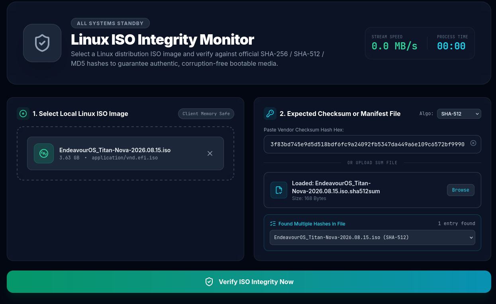
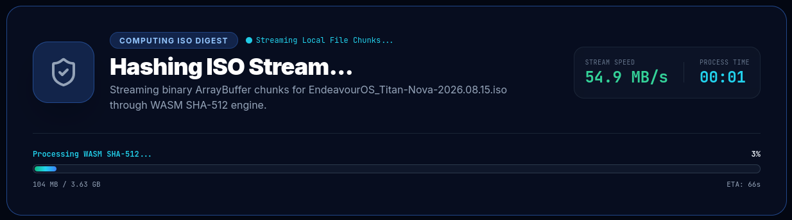
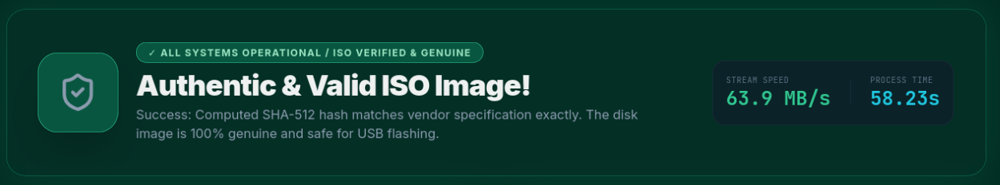

Download safety
How to verify an Endeavour Download

Visit the official Endeavour OS download page and click on the download link

Click on the download link from the nearest country to you.
Click on the checksum file link from the same country.

Go to the Linux ISO Checker homepage.
Click "browse files" or drag the ISO image from your Downloads folder into the "Select Local Linux ISO Image" box.
Click "browse" next to "Upload Manifest File" and choose the Endeavour checksum file. You will need to change the type to all files to see it.
Click "Verify" to compare the calculated checksum with the expected value.

Depending on the file size, the verification process may take a minute or two to process.
When the process has completed, you will see the results of the verification.
